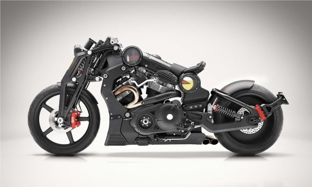

Con sólo la producción de 61 motos exclusivas: 30 con acabados en aluminio y 31 en color negro, la Confederate P51 CombatFighter II es una moto de colección exclusiva, que tiene un precio de 120 mil euros. Para conocerla mejor, debemos saber que tiene un motor biclíndrico CX4 de 2.163 cc, capaz de entregar más de 100 caballos de fuerza, además posee un cambio de marchas de cinco velocidades, sin olvidar el uso de materiales exóticos en acabados y su diseño.
